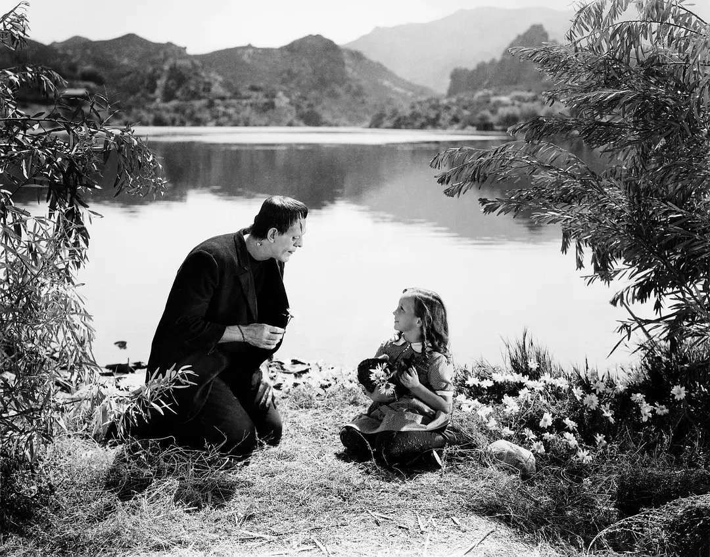
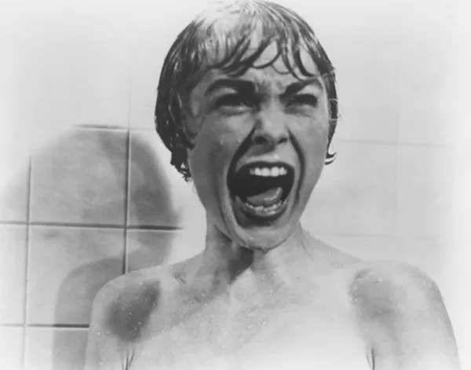
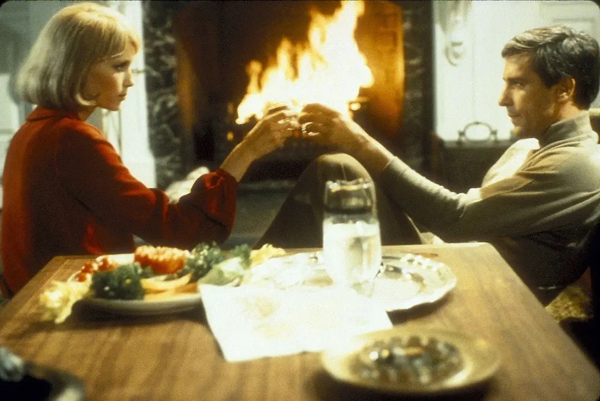

<title>HorrorDB - Shadows & Celluloid</title> <style> /* 全局样式 */ :root { --bg-color: #121212; --surface-color: #1f1f1f; --text-primary: #ffffff; --text-secondary: #b3b3b3; --imdb-yellow: #f5c518; --hover-color: #2a2a2a; }
    body {
        margin: 0;
        padding: 0;
        font-family: 'Helvetica Neue', Arial, sans-serif;
        background-color: var(--bg-color);
        color: var(--text-primary);
        line-height: 1.6;
    }

    /* 顶部导航栏 */
    header {
        background-color: #000000;
        padding: 10px 20px;
        display: flex;
        align-items: center;
        justify-content: space-between;
        position: sticky;
        top: 0;
        z-index: 100;
        box-shadow: 0 2px 10px rgba(0,0,0,0.5);
    }

    .logo {
        background-color: var(--imdb-yellow);
        color: #000;
        font-weight: 900;
        font-size: 1.2rem;
        padding: 5px 10px;
        border-radius: 4px;
        text-decoration: none;
        letter-spacing: -0.5px;
    }

    .search-bar {
        flex-grow: 1;
        margin: 0 30px;
        display: flex;
    }

    .search-bar input {
        width: 100%;
        padding: 8px 15px;
        border: none;
        border-radius: 4px;
        background-color: #fff;
        font-size: 1rem;
    }

    /* 主体内容区 */
    main {
        max-width: 1100px; /* 稍微加宽一点以适应网格 */
        margin: 0 auto;
        padding: 20px;
    }

    /* 电影节简介版块 */
    .festival-intro {
        background: linear-gradient(rgba(0,0,0,0.7), rgba(0,0,0,0.9)), url('https://images.unsplash.com/photo-1505635552518-3448ff116af3?ixlib=rb-4.0.3&auto=format&fit=crop&w=1000&q=80') center/cover;
        padding: 40px;
        border-radius: 8px;
        margin-bottom: 40px;
        border: 1px solid #333;
    }

    .festival-intro h1 {
        color: var(--imdb-yellow);
        font-size: 2.5rem;
        margin-top: 0;
        border-bottom: 2px solid #333;
        padding-bottom: 10px;
    }

    .festival-intro p {
        font-size: 1.1rem;
        color: #e0e0e0;
    }

    .section-title {
        color: var(--imdb-yellow);
        font-size: 1.8rem;
        margin-bottom: 20px;
        display: flex;
        align-items: center;
    }
    
    .section-title::before {
        content: '';
        display: inline-block;
        width: 4px;
        height: 24px;
        background-color: var(--imdb-yellow);
        margin-right: 10px;
        border-radius: 2px;
    }

    /* ========== 修改核心：电影卡片网格布局 ========== */
    .movie-grid {
        display: grid;
        /* 自动适应屏幕宽度，每列最小 400px，最大填满 */
        grid-template-columns: repeat(auto-fit, minmax(400px, 1fr));
        gap: 30px; 
    }

    .movie-card {
        display: flex;
        flex-direction: column; /* 【关键修改】改为上下垂直排列 */
        background-color: var(--surface-color);
        border-radius: 8px;
        overflow: hidden;
        box-shadow: 0 4px 6px rgba(0,0,0,0.3);
        transition: transform 0.2s, background-color 0.2s;
        height: 100%; /* 让同一行的卡片等高 */
    }

    .movie-card:hover {
        transform: translateY(-5px); /* 悬停时微微上浮 */
        background-color: var(--hover-color);
    }

    .movie-poster {
        width: 100%;
        height: 400px; /* 固定图片高度，您可以根据喜好调整 */
        background-color: #1a1a1a; /* 图片加载前的底色 */
    }

    .movie-poster img {
        width: 100%;
        height: 100%;
        object-fit: cover; /* 【关键修改】确保图片填满区域且不变形 */
        object-position: center 20%; /* 让图片焦点偏上 */
        display: block;
    }

    .movie-info {
        padding: 25px;
        display: flex;
        flex-direction: column;
        flex-grow: 1; /* 让信息区域填满剩余高度 */
    }

    .movie-title {
        font-size: 1.5rem;
        margin: 0 0 10px 0;
    }

    .movie-title a {
        color: var(--text-primary);
        text-decoration: none;
    }

    .movie-title a:hover {
        text-decoration: underline;
    }

    .movie-meta {
        color: var(--text-secondary);
        font-size: 0.9rem;
        margin-bottom: 15px;
        padding-bottom: 15px;
        border-bottom: 1px solid #333; /* 增加一条分割线让视觉更清晰 */
    }

    .movie-meta span {
        margin-right: 15px;
    }

    .movie-meta strong {
        color: var(--text-primary);
    }

    .movie-synopsis {
        font-size: 1rem;
        color: #ccc;
        margin: 0;
        line-height: 1.7;
    }

    /* 页脚 */
    footer {
        text-align: center;
        padding: 20px;
        color: var(--text-secondary);
        font-size: 0.9rem;
        background-color: #000;
        margin-top: 60px;
    }

    /* 响应式设计：手机端适配 */
    @media (max-width: 768px) {
        .movie-grid {
            grid-template-columns: 1fr; /* 手机端强制单列显示 */
        }
        .movie-poster {
            height: 300px; /* 手机端稍微减小图片高度 */
        }
        .search-bar {
            display: none;
        }
    }
</style>
<header>
    <a href="#" class="logo">HorrorDB</a>
    <div class="search-bar">
        <input type="text" placeholder="Search movies, TV, and more...">
    </div>
    <div style="color: white; font-weight: bold; cursor: pointer;">Sign In</div>
</header>

<main>
    <section class="festival-intro">
        <h1>&#129656; Shadows & Celluloid: A Descent into Hollywood's Darkest Nightmares</h1>
        <h3>Welcome to the Midnight Matinee</h3>
        <p>Why do we love to be terrified? Perhaps it's the thrill of the racing heartbeat, the safety of the theater seat while chaos reigns on screen, or the masterclass in psychological manipulation that only cinema can provide. Welcome to <strong>"Shadows & Celluloid,"</strong> a curated cinematic journey through the blood-chilling corridors of classic Hollywood horror.</p>
        <p>We are not here to dissect these films with academic scalpels; we are here to experience them. Turn off the lights, lock the doors, and surrender to the dark. Here are five foundational nightmares that didn't just scare audiences&mdash;they redefined what we fear.</p>
    </section>

    <h2 class="section-title">Featured Films</h2>

    <!-- 加入了 movie-grid 容器 -->
    <div class="movie-grid">
        
        <article class="movie-card">
            <div class="movie-poster">
                <!-- 图片链接略微调整了比例(800x600)以适应横向展出的上方区域 -->
                
            </div>
            <div class="movie-info">
                <h2 class="movie-title"><a href="#">1. Frankenstein</a></h2>
                <div class="movie-meta">
                    <span><strong>Year:</strong> 1931</span>
                    <span><strong>Director:</strong> James Whale</span>
                </div>
                <p class="movie-synopsis"><strong>The Nightmare:</strong> "It's alive! It's alive!" Long before CGI monsters took over the screen, Boris Karloff's haunting, tragic portrayal of a creature assembled from the dead struck a nerve that still vibrates today. Driven by the obsessive Dr. Henry Frankenstein, who dares to play God, this gothic masterpiece explores the devastating consequences of tampering with nature. It's a story of science gone mad, wrapped in eerie fog, thunderous laboratories, and a profound, unexpected sadness. Prepare to sympathize with the monster.</p>
            </div>
        </article>

        <article class="movie-card">
            <div class="movie-poster">
                
            </div>
            <div class="movie-info">
                <h2 class="movie-title"><a href="#">2. Psycho</a></h2>
                <div class="movie-meta">
                    <span><strong>Year:</strong> 1960</span>
                    <span><strong>Director:</strong> Alfred Hitchcock</span>
                </div>
                <p class="movie-synopsis"><strong>The Nightmare:</strong> Check-in is easy at the Bates Motel, but checking out is murder. Alfred Hitchcock didn't just make a scary movie; he orchestrated a cultural panic that made an entire generation terrified of taking a shower. When a desperate secretary goes on the run with stolen cash and stops at a secluded roadside motel, she meets the boyish, polite Norman Bates&mdash;and his demanding mother. Razor-sharp, relentlessly tense, and famously shocking, <em>Psycho</em> is the undisputed grandfather of the modern psychological thriller.</p>
            </div>
        </article>

        <article class="movie-card">
            <div class="movie-poster">
                
            </div>
            <div class="movie-info">
                <h2 class="movie-title"><a href="#">3. Rosemary's Baby</a></h2>
                <div class="movie-meta">
                    <span><strong>Year:</strong> 1968</span>
                    <span><strong>Director:</strong> Roman Polanski</span>
                </div>
                <p class="movie-synopsis"><strong>The Nightmare:</strong> Urban paranoia meets demonic terror in the heart of New York City. Young, expectant mother Rosemary Woodhouse moves into a gorgeous but notoriously cursed apartment building with her ambitious actor husband. Soon, the intrusive, overly friendly neighbors begin taking a strange interest in her pregnancy. As her body changes, so does her reality, slipping into a paranoid fever dream where no one can be trusted. This is horror bathed in daylight and polite society&mdash;a suffocating, slow-burn masterpiece that will make you look twice at your neighbors.</p>
            </div>
        </article>

        <article class="movie-card">
            <div class="movie-poster">
                
            </div>
            <div class="movie-info">
                <h2 class="movie-title"><a href="#">4. The Exorcist</a></h2>
                <div class="movie-meta">
                    <span><strong>Year:</strong> 1973</span>
                    <span><strong>Director:</strong> William Friedkin</span>
                </div>
                <p class="movie-synopsis"><strong>The Nightmare:</strong> The film that had audiences fainting in the aisles. When a twelve-year-old girl named Regan begins exhibiting increasingly disturbing and violent behavior, her desperate mother exhausts every medical explanation before turning to the Church. Enter two priests: one grappling with his faith, the other an expert in ancient evils. What follows is a brutal, visceral battle for a young girl's soul. Grounded in gritty realism, <em>The Exorcist</em> remains a terrifying endurance test that will shake you to your very core.</p>
            </div>
        </article>

        <article class="movie-card">
            <div class="movie-poster">
                
            </div>
            <div class="movie-info">
                <h2 class="movie-title"><a href="#">5. The Shining</a></h2>
                <div class="movie-meta">
                    <span><strong>Year:</strong> 1980</span>
                    <span><strong>Director:</strong> Stanley Kubrick</span>
                </div>
                <p class="movie-synopsis"><strong>The Nightmare:</strong> All work and no play makes Jack a dull boy. Welcome to the Overlook Hotel, a cavernous, isolated mountain resort where the walls bleed and the past refuses to stay dead. Writer Jack Torrance takes a job as the winter caretaker, bringing along his wife and clairvoyant young son. As the snow piles up and cabin fever sets in, the hotel's malevolent spirits slowly dismantle Jack's sanity. Kubrick's hypnotic, visually stunning epic is a labyrinth of dread that will freeze your blood and linger in your mind long after the credits roll.</p>
            </div>
        </article>

    </div> <!-- 结束 movie-grid -->
</main>

<footer>
    <p><em>Ready to scream? Click on any film to watch the original theatrical trailers, view exclusive behind-the-scenes galleries, and book your tickets for our midnight screenings.</em></p>
    <p>&copy; 2026 HorrorDB / Shadows & Celluloid Film Festival. All rights reserved.</p>
</footer>
